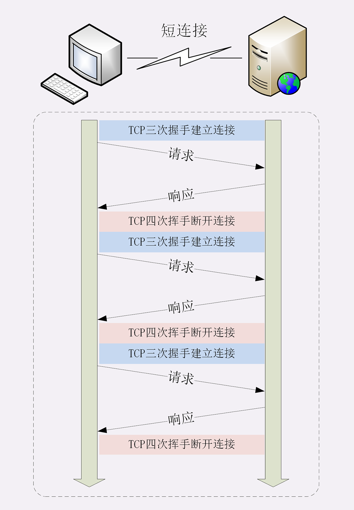
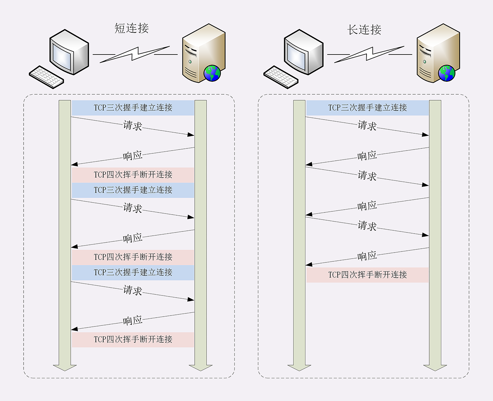
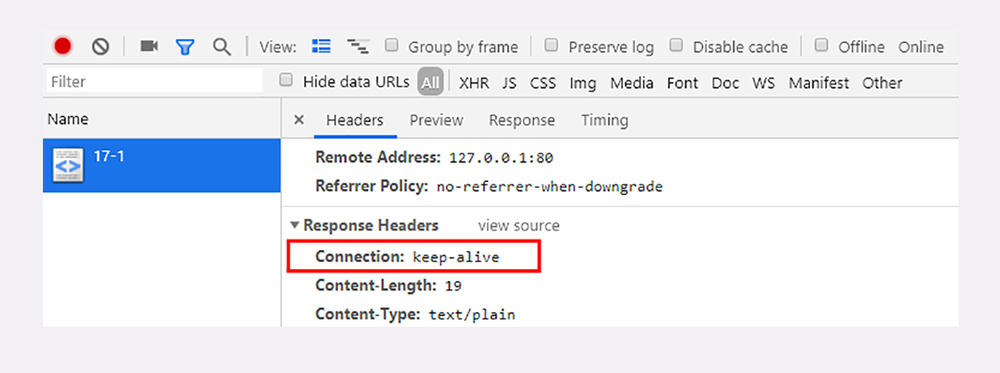
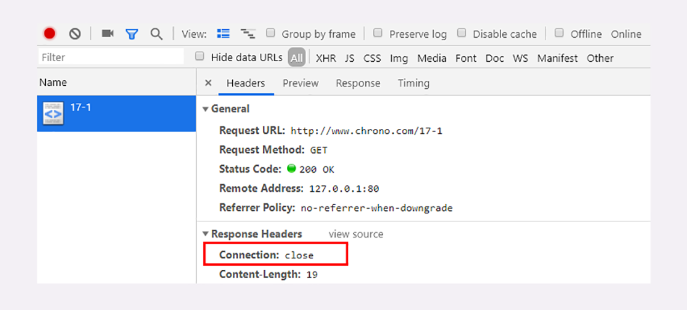
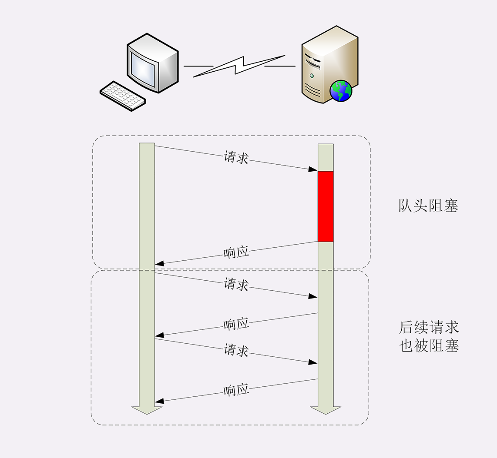
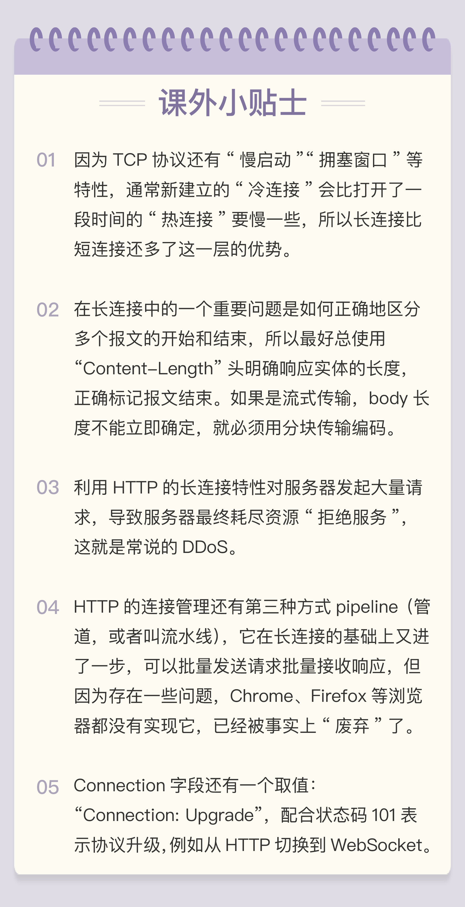

- 00 开篇词｜To Be a HTTP Hero.md.html
- 01 时势与英雄：HTTP的前世今生.md.html
- 02 HTTP是什么？HTTP又不是什么？.md.html
- 03 HTTP世界全览（上）：与HTTP相关的各种概念.md.html
- 04 HTTP世界全览（下）：与HTTP相关的各种协议.md.html
- 05 常说的“四层”和“七层”到底是什么？“五层”“六层”哪去了？.md.html
- 06 域名里有哪些门道？.md.html
- 07 自己动手，搭建HTTP实验环境.md.html
- 08 键入网址再按下回车，后面究竟发生了什么？.md.html
- 09 HTTP报文是什么样子的？.md.html
- 10 应该如何理解请求方法？.md.html
- 11 你能写出正确的网址吗？.md.html
- 12 响应状态码该怎么用？.md.html
- 13 HTTP有哪些特点？.md.html
- 14 HTTP有哪些优点？又有哪些缺点？.md.html
- 15 海纳百川：HTTP的实体数据.md.html
- 16 把大象装进冰箱：HTTP传输大文件的方法.md.html
- 17 排队也要讲效率：HTTP的连接管理.md.html
- 18 四通八达：HTTP的重定向和跳转.md.html
- 19 让我知道你是谁：HTTP的Cookie机制.md.html
- 20 生鲜速递：HTTP的缓存控制.md.html
- 21 良心中间商：HTTP的代理服务.md.html
- 22 冷链周转：HTTP的缓存代理.md.html
- 23 HTTPS是什么？SSLTLS又是什么？.md.html
- 24 固若金汤的根本（上）：对称加密与非对称加密.md.html
- 25 固若金汤的根本（下）：数字签名与证书.md.html
- 26 信任始于握手：TLS1.2连接过程解析.md.html
- 27 更好更快的握手：TLS1.3特性解析.md.html
- 28 连接太慢该怎么办：HTTPS的优化.md.html
- 29 我应该迁移到HTTPS吗？.md.html
- 30 时代之风（上）：HTTP2特性概览.md.html
- 31 时代之风（下）：HTTP2内核剖析.md.html
- 32 未来之路：HTTP3展望.md.html
- 33 我应该迁移到HTTP2吗？.md.html
- 34 Nginx：高性能的Web服务器.md.html
- 35 OpenResty：更灵活的Web服务器.md.html
- 36 WAF：保护我们的网络服务.md.html
- 37 CDN：加速我们的网络服务.md.html
- 38 WebSocket：沙盒里的TCP.md.html
- 39 HTTP性能优化面面观（上）.md.html
- 40 HTTP性能优化面面观（下）.md.html
- 结束语 做兴趣使然的Hero.md.html
17 排队也要讲效率：HTTP的连接管理
在[第 14 讲]里，我曾经提到过 HTTP 的性能问题，用了六个字来概括：“不算差，不够好”。同时，我也谈到了“队头阻塞”，但由于时间的限制没有展开来细讲，这次就来好好地看看 HTTP 在连接这方面的表现。
HTTP 的连接管理也算得上是个“老生常谈”的话题了，你一定曾经听说过“短连接”“长连接”之类的名词，今天让我们一起来把它们弄清楚。
短连接
HTTP 协议最初（0.9/1.0）是个非常简单的协议，通信过程也采用了简单的“请求 - 应答”方式。
它底层的数据传输基于 TCP/IP，每次发送请求前需要先与服务器建立连接，收到响应报文后会立即关闭连接。
因为客户端与服务器的整个连接过程很短暂，不会与服务器保持长时间的连接状态，所以就被称为“短连接”（short-lived connections）。早期的 HTTP 协议也被称为是“无连接”的协议。
短连接的缺点相当严重，因为在 TCP 协议里，建立连接和关闭连接都是非常“昂贵”的操作。TCP 建立连接要有“三次握手”，发送 3 个数据包，需要 1 个 RTT；关闭连接是“四次挥手”，4 个数据包需要 2 个 RTT。
而 HTTP 的一次简单“请求 - 响应”通常只需要 4 个包，如果不算服务器内部的处理时间，最多是 2 个 RTT。这么算下来，浪费的时间就是“3÷5=60%”，有三分之二的时间被浪费掉了，传输效率低得惊人。

单纯地从理论上讲，TCP 协议你可能还不太好理解，我就拿打卡考勤机来做个形象的比喻吧。
假设你的公司买了一台打卡机，放在前台，因为这台机器比较贵，所以专门做了一个保护罩盖着它，公司要求每次上下班打卡时都要先打开盖子，打卡后再盖上盖子。
可是偏偏这个盖子非常牢固，打开关闭要费很大力气，打卡可能只要 1 秒钟，而开关盖子却需要四五秒钟，大部分时间都浪费在了毫无意义的开关盖子操作上了。
可想而知，平常还好说，一到上下班的点在打卡机前就会排起长队，每个人都要重复“开盖 - 打卡 - 关盖”的三个步骤，你说着急不着急。
在这个比喻里，打卡机就相当于服务器，盖子的开关就是 TCP 的连接与关闭，而每个打卡的人就是 HTTP 请求，很显然，短连接的缺点严重制约了服务器的服务能力，导致它无法处理更多的请求。
长连接
针对短连接暴露出的缺点，HTTP 协议就提出了“长连接”的通信方式，也叫“持久连接”（persistent connections）、“连接保活”（keep alive）、“连接复用”（connection reuse）。
其实解决办法也很简单，用的就是“成本均摊”的思路，既然 TCP 的连接和关闭非常耗时间，那么就把这个时间成本由原来的一个“请求 - 应答”均摊到多个“请求 - 应答”上。
这样虽然不能改善 TCP 的连接效率，但基于“分母效应”，每个“请求 - 应答”的无效时间就会降低不少，整体传输效率也就提高了。
这里我画了一个短连接与长连接的对比示意图。

在短连接里发送了三次 HTTP“请求 - 应答”，每次都会浪费 60% 的 RTT 时间。而在长连接的情况下，同样发送三次请求，因为只在第一次时建立连接，在最后一次时关闭连接，所以浪费率就是“3÷9≈33%”，降低了差不多一半的时间损耗。显然，如果在这个长连接上发送的请求越多，分母就越大，利用率也就越高。
继续用刚才的打卡机的比喻，公司也觉得这种反复“开盖 - 打卡 - 关盖”的操作太“反人类”了，于是颁布了新规定，早上打开盖子后就不用关上了，可以自由打卡，到下班后再关上盖子。
这样打卡的效率（即服务能力）就大幅度提升了，原来一次打卡需要五六秒钟，现在只要一秒就可以了，上下班时排长队的景象一去不返，大家都开心。
连接相关的头字段
由于长连接对性能的改善效果非常显著，所以在 HTTP/1.1 中的连接都会默认启用长连接。不需要用什么特殊的头字段指定，只要向服务器发送了第一次请求，后续的请求都会重复利用第一次打开的 TCP 连接，也就是长连接，在这个连接上收发数据。
当然，我们也可以在请求头里明确地要求使用长连接机制，使用的字段是Connection，值是“keep-alive”。
不过不管客户端是否显式要求长连接，如果服务器支持长连接，它总会在响应报文里放一个“Connection: keep-alive”字段，告诉客户端：“我是支持长连接的，接下来就用这个 TCP 一直收发数据吧”。
你可以在实验环境里访问 URI“/17-1”，用 Chrome 看一下服务器返回的响应头：

不过长连接也有一些小缺点，问题就出在它的“长”字上。
因为 TCP 连接长时间不关闭，服务器必须在内存里保存它的状态，这就占用了服务器的资源。如果有大量的空闲长连接只连不发，就会很快耗尽服务器的资源，导致服务器无法为真正有需要的用户提供服务。
所以，长连接也需要在恰当的时间关闭，不能永远保持与服务器的连接，这在客户端或者服务器都可以做到。
在客户端，可以在请求头里加上“Connection: close”字段，告诉服务器：“这次通信后就关闭连接”。服务器看到这个字段，就知道客户端要主动关闭连接，于是在响应报文里也加上这个字段，发送之后就调用 Socket API 关闭 TCP 连接。
服务器端通常不会主动关闭连接，但也可以使用一些策略。拿 Nginx 来举例，它有两种方式：
- 使用“keepalive_timeout”指令，设置长连接的超时时间，如果在一段时间内连接上没有任何数据收发就主动断开连接，避免空闲连接占用系统资源。
- 使用“keepalive_requests”指令，设置长连接上可发送的最大请求次数。比如设置成 1000，那么当 Nginx 在这个连接上处理了 1000 个请求后，也会主动断开连接。
另外，客户端和服务器都可以在报文里附加通用头字段“Keep-Alive: timeout=value”，限定长连接的超时时间。但这个字段的约束力并不强，通信的双方可能并不会遵守，所以不太常见。
我们的实验环境配置了“keepalive_timeout 60”和“keepalive_requests 5”，意思是空闲连接最多 60 秒，最多发送 5 个请求。所以，如果连续刷新五次页面，就能看到响应头里的“Connection: close”了。
把这个过程用 Wireshark 抓一下包，就能够更清晰地看到整个长连接中的握手、收发数据与挥手过程，在课后你可以再实际操作看看。

队头阻塞
看完了短连接和长连接，接下来就要说到著名的“队头阻塞”（Head-of-line blocking，也叫“队首阻塞”）了。
“队头阻塞”与短连接和长连接无关，而是由 HTTP 基本的“请求 - 应答”模型所导致的。
因为 HTTP 规定报文必须是“一发一收”，这就形成了一个先进先出的“串行”队列。队列里的请求没有轻重缓急的优先级，只有入队的先后顺序，排在最前面的请求被最优先处理。
如果队首的请求因为处理的太慢耽误了时间，那么队列里后面的所有请求也不得不跟着一起等待，结果就是其他的请求承担了不应有的时间成本。

还是用打卡机做个比喻。
上班的时间点上，大家都在排队打卡，可这个时候偏偏最前面的那个人遇到了打卡机故障，怎么也不能打卡成功，急得满头大汗。等找人把打卡机修好，后面排队的所有人全迟到了。
性能优化
因为“请求 - 应答”模型不能变，所以“队头阻塞”问题在 HTTP/1.1 里无法解决，只能缓解，有什么办法呢？
公司里可以再多买几台打卡机放在前台，这样大家可以不用挤在一个队伍里，分散打卡，一个队伍偶尔阻塞也不要紧，可以改换到其他不阻塞的队伍。
这在 HTTP 里就是“并发连接”（concurrent connections），也就是同时对一个域名发起多个长连接，用数量来解决质量的问题。
但这种方式也存在缺陷。如果每个客户端都想自己快，建立很多个连接，用户数×并发数就会是个天文数字。服务器的资源根本就扛不住，或者被服务器认为是恶意攻击，反而会造成“拒绝服务”。
所以，HTTP 协议建议客户端使用并发，但不能“滥用”并发。RFC2616 里明确限制每个客户端最多并发 2 个连接。不过实践证明这个数字实在是太小了，众多浏览器都“无视”标准，把这个上限提高到了 6~8。后来修订的 RFC7230 也就“顺水推舟”，取消了这个“2”的限制。
但“并发连接”所压榨出的性能也跟不上高速发展的互联网无止境的需求，还有什么别的办法吗？
公司发展的太快了，员工越来越多，上下班打卡成了迫在眉睫的大问题。前台空间有限，放不下更多的打卡机了，怎么办？那就多开几个打卡的地方，每个楼层、办公区的入口也放上三四台打卡机，把人进一步分流，不要都往前台挤。
这个就是“域名分片”（domain sharding）技术，还是用数量来解决质量的思路。
HTTP 协议和浏览器不是限制并发连接数量吗？好，那我就多开几个域名，比如 shard1.chrono.com、shard2.chrono.com，而这些域名都指向同一台服务器 www.chrono.com，这样实际长连接的数量就又上去了，真是“美滋滋”。不过实在是有点“上有政策，下有对策”的味道。
小结
这一讲中我们学习了 HTTP 协议里的短连接和长连接，简单小结一下今天的内容：
- 早期的 HTTP 协议使用短连接，收到响应后就立即关闭连接，效率很低；
- HTTP/1.1 默认启用长连接，在一个连接上收发多个请求响应，提高了传输效率；
- 服务器会发送“Connection: keep-alive”字段表示启用了长连接；
- 报文头里如果有“Connection: close”就意味着长连接即将关闭；
- 过多的长连接会占用服务器资源，所以服务器会用一些策略有选择地关闭长连接；
- “队头阻塞”问题会导致性能下降，可以用“并发连接”和“域名分片”技术缓解。
课下作业
- 在开发基于 HTTP 协议的客户端时应该如何选择使用的连接模式呢？短连接还是长连接？
- 应当如何降低长连接对服务器的负面影响呢？
欢迎你把自己的学习体会写在留言区，与我和其他同学一起讨论。如果你觉得有所收获，也欢迎把文章分享给你的朋友。
